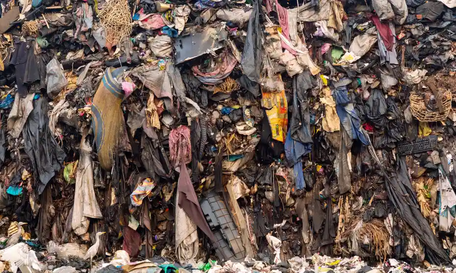

This is a picture of the Rana Plaza collapse in Bangladesh. As shown, a very large garment factory collapsed and there are many people surrounding it who were left dead or severely injured.
This is a picture of a firefighter carrying a clearly undernourished and injured child out of the wreakage that was the Rana Plaza collapse. Many other people are seen behind the firefighter who were also affected.
This is a picture of textile waste in the waters. You can barely see the actual water because of how much waste is in there. This water gets recycled for local people to drink, and it clearly is not sanitary.
This is another picture of the water pollution from toxic waste from garments. Even the color of the water is different showing how dirty this water is. There are mountains of waste on either sides showing how terrible this waste is for the environment.
This is a picture of a landfill that is filled with garments that have just been thrown out. These garments have been accumulated over time and make up a large portion of the world's pollution.
This is a picture of more waste from garments and toxic waste from factories. By leaving waste like this in landfills, fast fashion is one of the largest contributors of pollution in the world.